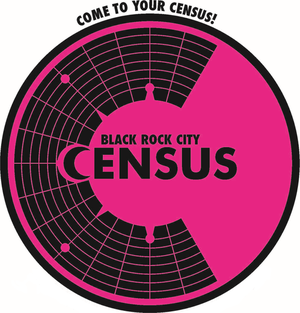

Reports Archive

Black Rock City (BRC) Census is a volunteer-driven collaborative research project that gathers data to support Burning Man Project, academic researchers, and the broader Burner community. The more we understand the makeup of Black Rock City and the diverse kinds of Burning Man experiences, the better equipped we are to meet the needs of the community and help Burning Man culture continue to flourish.Census data help Burning Man Project plan the event, advocate for the community, and work with local and federal agencies during the permitting process. Researchers also use these data in academic studies and publications.
Since 2013, Census has collected data in two phases: an on-playa sample of participants entering Black Rock City through the Main Gate, airport, and Burner Express Bus, and a more extensive online survey after the Man burns. Because participation in the online survey is voluntary, we use the on-playa sample to weight online responses to better represent the Black Rock City population. These estimates describe BRC participants, rather than the broader Burning Man community. Changes in questions and methods limit comparisons across years, especially with reports before 2013.
The Census is also about YOU. It gives Burners the ability to understand just a bit more about the city that many of us call home. It is a chance for us all to learn who our neighbors might be, what brings them out to Burning Man, and what changes are taking place in BRC from one year to the next. Learn more about how the data are collected and analyzed or how to join the volunteer team, and then check out the Census results through the years: